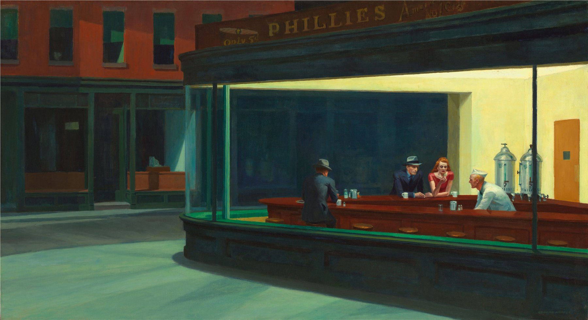

A diner glows on a dead street corner like a ship run aground, four people trapped in the same wash of yellow light — and not one of them is looking at another. With a single curved pane of glass, Hopper bound the whole of American urban loneliness into one image. There's no dialogue, and yet it may be the most quoted, parodied, and referenced painting of the twentieth century — every neon-soaked film-noir street, from Blade Runner on down, owes something to this light.
The strangest thing about this painting is what's missing: there's no visible entrance to the diner. The only opening in the whole scene is that sharp curved pane of glass, and it locks the viewer onto the sidewalk across the street — permanently on the outside, peering in like a passerby stealing a glance at someone else's night. That exclusion is the actual physical source of the painting's loneliness.
The counter arcs across the frame, pinning all four figures to one horizontal line, then splits them right back apart by the direction each body faces: the man seated alone with his back to us is fully sealed off; the suited man and the woman in red sit shoulder to shoulder but look elsewhere; the counterman, bent over his work, is the only one actually doing anything. Four people share one room, and no two lines of sight ever meet.
Outside, a wide stretch of empty sidewalk runs flat toward both edges of the frame, in sharp contrast to the tight, crowded counter inside — Hopper gave nearly half the canvas to "nobody's there," a genuinely bold use of negative space for 1942.
The whole picture rests on an extreme hot-cold collision: outside, the street and building shadows sit in a near-frozen family of dark green-gray and indigo; inside, a broad wash of almost-fluorescent lemon yellow. The two temperatures meet with almost no transition, right at the glass — a textbook demonstration of color creating a sensation of heat. The yellow doesn't need a label reading "warm"; your body registers the temperature of that light on its own.
That warm interior is then cut back apart by three saturated complements: the man's dark navy suit, the woman's red dress, the counterman's white uniform. Red and green — her dress against the deep teal storefront outside — sit almost directly opposite each other on the color wheel; distant from one another in the frame, they still call back and forth visually, giving the picture real chromatic tension inside an otherwise unified palette.
Hopper deliberately pulled the overall saturation down — even the lemon yellow is a grayed, warm yellow rather than a pure one. That "low-saturation, large-block color" approach is what separates him from his brighter, more decorative urban-scene contemporaries: restraint in color, and the mood only gets heavier for it.
Hopper was long fascinated by Manet-style realist brushwork and the clean, economical outlines he'd trained into during his years as a commercial illustrator; the surface here is almost brushless, the paint ground down thin and flat, edges cut sharp as silhouettes. It gives the picture the cool, deliberate feel of a film storyboard — and it's the technical signature that sets him apart from his more expressionist contemporaries.
Light is treated as the picture's only engine of narrative: the diner's fluorescent tubes are the sole light source in the entire scene, and from that one source every shadow under the counter, every highlight on a cheekbone, every faint reflection of yellow on the paving stones is logically derived. That "one light rules the whole frame" approach was picked up wholesale by film noir cinematographers a few years later.
Hopper and his wife, Josephine Nivison, regularly modeled for each other, and the woman here is believed to be based on Jo — their marriage itself was famously fraught with distance and friction, and on some level, the picture's sense of people sharing a room without ever truly reaching each other reads as a projection of their own relationship.
Nighthawks was finished on January 21, 1942 — barely six weeks after Pearl Harbor, with the United States gripped by wartime anxiety and creeping blackout regulations. Hopper later denied any deliberate reference to the war, but the painting's mood — the world could go dark at any moment, and right now, this one light is still on — landed with uncanny precision on the collective psyche of the country at that exact moment, which is a large part of why it became a symbol of its era almost as soon as it was shown.
What keeps the painting alive, though, might be something more durable: it captures an intensely modern kind of loneliness — the kind where you can stand in a brightly lit, crowded public space, surrounded by strangers, and still connect with none of them. That "alone together" feeling reads, if anything, even truer in the smartphone era, which is likely why the image keeps getting reinterpreted, parodied, and quoted.
Edward Hopper (1882–1967) is the defining figure of American realist painting. He spent years supporting himself as a commercial illustrator before his oil paintings finally found an audience in his forties. For most of his career he split his time between New York and the New England coast, painting gas stations, motels, theaters, and offices — the quiet, almost frozen instants embedded in America's ordinary public spaces.
Nighthawks is among his most important and final major works. The diner isn't a precise study of any single real location — Hopper assembled it from fragments of Greenwich Village streets he knew, imagined into a composite. That blurred line between observation and invention runs through his entire body of work.